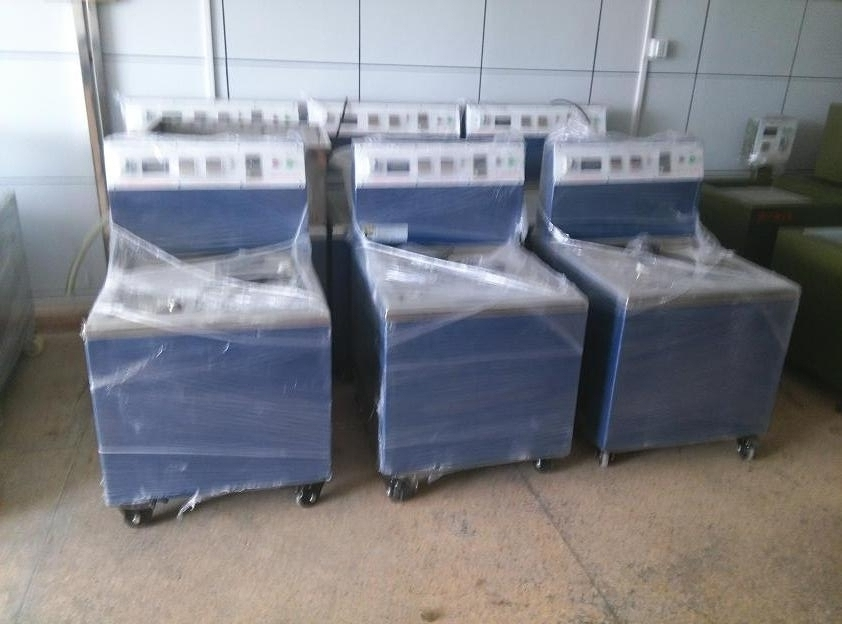

磁力研磨机|磁力去毛刺自动抛光机|304磁力不锈钢针|清洗研磨光亮剂试样地址
苏州上海无锡南京中创专业提供磁力抛光机，磁力研磨机，精密去毛刺设备。专业解决精密内孔去毛刺，表面光亮，除油去污等问题。 适用于金,银,铜,铝,锌,镁,铁,不锈钢等金属类与硬质塑料等工件的研磨抛光、洗净、去毛刺。
一、研磨速度快，平均一次研磨时间约5分至20分钟左右，配双加工槽替换工件快，可在机器运转中交换研磨零件2.操作简单，绝对安全，一人可操作数台机器3.成本低，不锈钢针为半永久性磨材，消耗极低，唯一的耗材为研磨液4.无污染，研磨液是含97%水份，故无毒性及发生火灾之虞，完全符合环保排放标准5.研磨完成后，工件好处理，可用筛网，筛筒，电磁力，或分离机轻易将工件及不锈钢针分离6.不锈钢针有直径0.2-5MM至1.2-10MM可供选择，其它规格抛光针也可订做。
二、设备工作原理：
大越中创磁力研磨抛光机是巧妙应用超强的电磁力达到神奇磁场力量，传导细小的研磨不锈钢针，产生高速跳跃流动，调头等动作，在工件内孔、死角、夹缝表面摩擦，一次性高效达到抛光、清洗去除毛刺等精密研磨效果。利用其独特的磁场分布,产生强劲平稳的磁感效应，使磁力钢针与工件进行全方位,多角度地充分研磨，达到快速除锈,去死角,去除毛刺批锋,除去氧化薄膜及烧结痕迹等功效。尤其对形状复杂,多孔夹缝，内外螺纹等工件，更加能显示其神奇妙用.并且，不伤及工件表面，不影响工件精度。让工件瞬间变得光滑整洁，焕然一新。
产品用途：1：成品去除毛刺; 2：表面锈蚀处理；3：成品表面抛光；4：打磨洗净工作； 5：去除氧化薄膜（不会损害工件表面形状）
三、适用行业产品：1：首饰工艺品；硬质塑料，塑胶。2：自动车床零件，CNC加工件；
3：压铸、冲压零件；4：弹簧、弹片零件; 5电子、通信、医疗器械零件 6：紧固件，精密五金零件等等
四、设备特点:1：实现除毛刺,倒角,抛光,洗净等多重功效2：对于不规则状零件,孔状、管状等死角,夹缝等均可抛光。3：定制时间，加工速度快捷,操作简单安全4：抛光去毛刺无死角 。
五、大越中创磁力抛光机或磁力研磨机优势：
1.磁力抛光研磨没有死角，让所有部位完全研磨；研磨后工件绝不变形、绝不损伤表面、绝不影响精度。
2.精密小型异形零部件、不规则状零件：去除毛刺、飞边、氧化皮、抛光、清洗、倒角、增强表面硬度等研磨同时完成。
3.磨材最小直径Ф0.2mm*L3mm金属零件的孔内、管内、夹缝、死角、直角、螺牙等不规则部位均可研磨。
4.成本低，速度快，约2-20分钟完成；操作简单、方便、完全免技术，可多机操作。
5.适用材质：铜、不锈钢、铝、锌、镁、钛合金、金银饰品、铁、碳钢类等。
6.适用行业：医疗器械、航天航空零件、军事工业、光电、电子、电脑、通信零件、CNC、自动车件、精密冲压件、压铸件、粉末冶金件等。
六、日常保养
1：抛光液溅到机器上应及时擦拭干净，防止液体损伤机器表面。
2：使用后用抹布擦干净机器表面
3：不使用时控制面板用胶袋套住，这样可用防尘防污。
4：放桶时，抛光槽内若有抛光针，要及时清理。
七、使用注意事项：
1．机器在正常运转时，不可将抛光桶取出，或将手放入抛光桶内，以防损坏机器和伤手。工件抛光结束后，应及时烘干处理，效果更佳。
2．不要将水及杂物放入放置抛光桶的柜架内，机器在停用时要搞好清洁卫生。每次抛光结束后，如间隔一两天不使用，应把抛光钢针清洗干净，置放在干燥地方储存，方便下次继续使用。
3．在运行中如发现有异常应立即停机，查明原因后方可投入运行。如有不明原因者，可与供应厂商取得联系，解决故障。
八、大越中创精密磁力研磨抛光机， 进口的品质，国产的价格，稳定性好，使用寿命长。12个月保修，终身维护。
九、货物的发货与包装：
1.本公司发货前都是经过专业的工作人员对货物进行调试，检查，确定合格才发货，所发出的每一台设备在发货前都是与快递公司或者货运公司共同检查，打包，才安排发货。
2.为了保证产品的质量，降低运输损坏率，让买家网络购物放心，本公司所发出的货物都是严格包装好的。
3.在签收货物前请仔细检查，如果外包装有破损就一定要检查所装货物是否齐全、若有遗失和损坏请不要签收，立即通知卖方可追究物流公司责任
苏州无锡上海南京泰州盐城西安山东中创研磨抛光科技咨询：133－061－33213 肖广东 更多磁力抛光机详细：http://www.jingmiqumaoci.com
欢迎寄样试样：江苏省苏州市吴中区�f直镇鸿路1号 技术部 肖广东收
TAG: